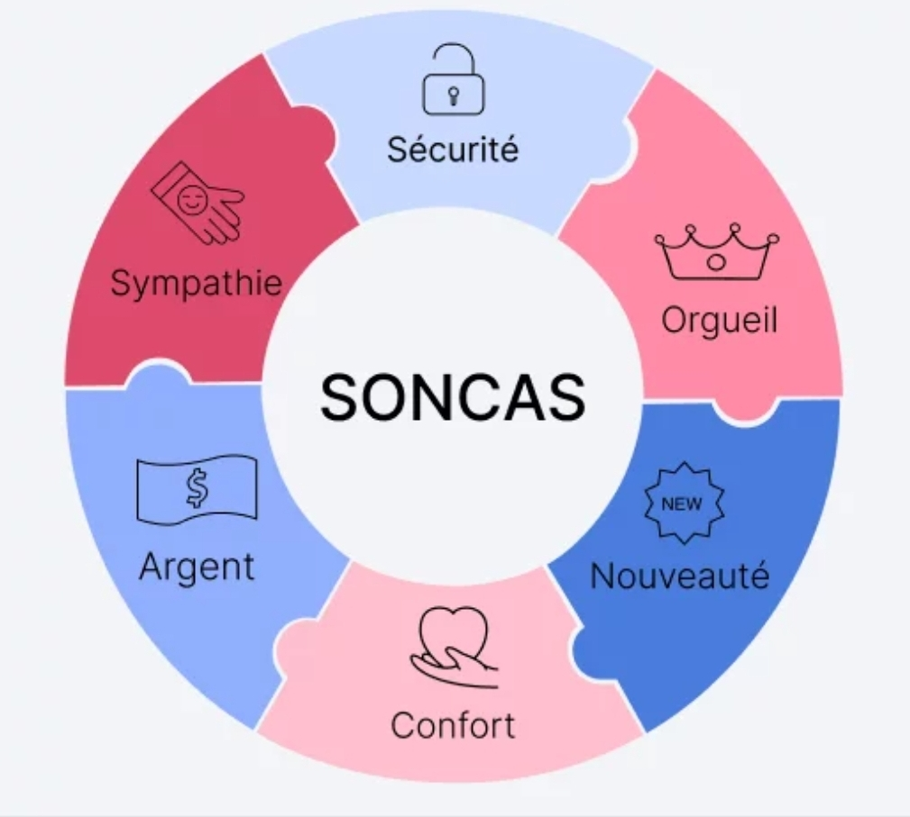

IB Conseil
Accompagnement & conseil professionnel
Accompagnement & conseil professionnel
Formation et accompagnement des équipes pour améliorer leurs performances commerciales et leur efficacité terrain.

Nous aidons les équipes commerciales à maîtriser les techniques de vente adaptées à leur marché et à leurs clients.
L’objectif est d’améliorer la qualité des échanges, de mieux répondre aux besoins des clients et d’augmenter durablement les taux de transformation.
Nos accompagnements permettent de renforcer les compétences en négociation afin de défendre les marges tout en construisant des relations commerciales durables.
Les équipes apprennent à préparer leurs négociations, à gérer les objections et à conclure efficacement.
Nous accompagnons les managers dans le pilotage de la performance commerciale grâce à des outils simples et concrets.
L’accent est mis sur le suivi des indicateurs clés, la fixation d’objectifs clairs et l’animation des équipes au quotidien.
L’accompagnement terrain permet de mettre en pratique les acquis directement en situation réelle.
En travaillant aux côtés des équipes, nous identifions les axes d’amélioration et apportons des recommandations opérationnelles immédiatement applicables.